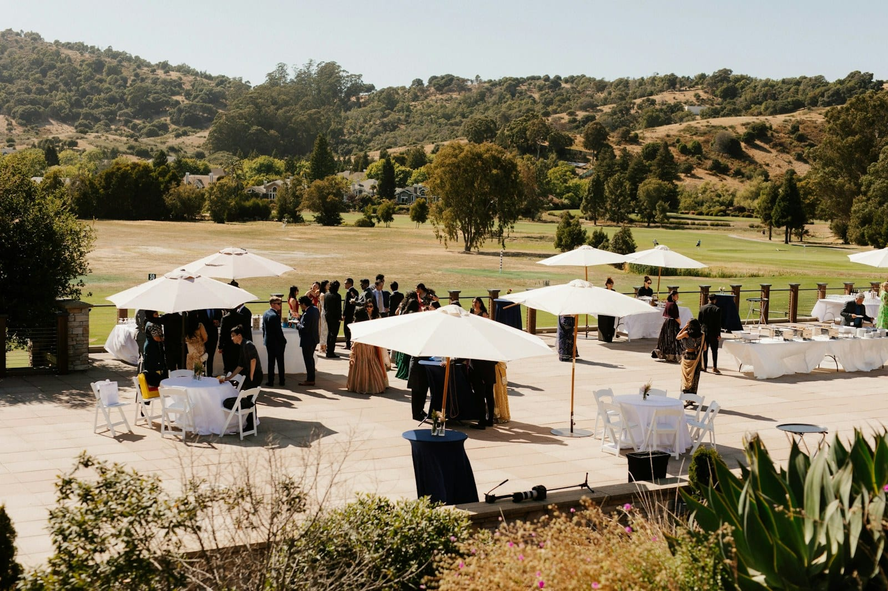

PLANNING
What changes when the reception is outdoors
Here's what to know about power, cover and the weather call, and why an outdoor site can make live music harder for your guests to hear and easier for the neighbors to hear. We'll also cover the Colorado decibel cap that most outdoor receptions fall under.

- An outdoor site works against you twice, since there are no walls to reflect sound back toward the dance floor and nothing to stop it from traveling to the property line.
- Colorado caps noise at 55 dB(A) in a residential zone during the day and 50 dB(A) after 7pm, measured 25 feet or more beyond the property line.
- Plan on cover for the band and the sound board, whatever the forecast says. Even dew can put the instruments out of tune.
- One person should be in charge of the decision to move indoors, with a set time for making it, and both should go in the run of show ahead of time.
A tent on a lawn can look so much easier to plan than a ballroom. There are fewer rules, there’s no venue sound team to coordinate with, and nobody from the venue is watching a meter. In practice, a band has more to deal with at an outdoor reception than at an indoor one, and that has more to do with physics than paperwork.
Here’s what changes when you take it outside.
How sound travels at an outdoor reception #
Indoors, walls and a ceiling reflect sound back toward the guests. A band gets that boost for free, which is why a quartet can fill a ballroom without the sound system working hard.
Outdoors, there’s nothing for the sound to bounce off. The same band needs more amplification to reach the same volume on the dance floor, and every decibel of it travels outward with nothing to stop it. So you lose twice, since you need more sound on the dance floor and you have less leeway at the property line.
That’s why an outdoor reception can feel quieter to your guests and louder to the neighbors at the same time.
The Colorado noise limit is measured at the property line #
Colorado’s Noise Abatement Act sets maximum levels measured 25 feet or more from the property line. In a residential zone that’s 55 dB(A) between 7am and 7pm, and 50 dB(A) after that. Going over that limit is prima facie evidence of a public nuisance, which means it counts as proof of one unless someone shows otherwise.
A dance floor runs 88 to 95 dB(A) where people are dancing. Those two numbers aren’t comparable, because they’re measured in different places, and what connects them is the distance from the stage to the property line. On an estate with two hundred feet of lawn in every direction, there’s usually no conflict. On a residential lot backing onto neighbors, the noise limit can decide how loud your whole event can be, and it’s good to find that out early.
There’s also a recent court decision you should know about. In September 2025 the Colorado Supreme Court held that a municipality cannot authorize a private for-profit venue to exceed the state caps. The exemption for cultural and entertainment events covers property used by a government body or a nonprofit, and the court read it narrowly.
A sound permit from the town to a commercial venue may no longer settle the question. Ask who owns the property and which exemption it falls under, and get an answer before you sign the contract.
Power and generators for an outdoor reception #
A band needs dedicated circuits within reach of the stage. Dedicated means the band isn’t sharing power with anything else, because a circuit shared with catering warmers or a lighting truss can trip, and it tends to trip when everything switches on at once, just as the venue fills up.
A generator can work too, with a few conditions. It has to be properly grounded, it needs more capacity than the band requires, and it should be a quiet model placed away from your guests. A home generator at the edge of a lawn can add a constant hum behind every quiet moment of the event, and once it’s running, nobody can make it go away.
Cover for the band at an outdoor reception #
The band and the sound board will need cover over them, even if the forecast looks perfect that week. Dew alone is enough of a reason. Colorado evenings can turn cold fast, wooden instruments and electronics both react to damp air, and by the end of a clear, cold night, the musicians may be retuning between songs even if it never rained.
That temperature swing affects the band in another way, too. A sound check in the afternoon and a last set after dark can sound very different, and a band that has played outdoors before will plan for that.
Decide who makes the weather call #
When a move indoors goes badly, the weather is rarely the real problem. More often, two people each assumed the other one was going to make the decision.
Add it to your run of show like any other item, with who makes the call to move indoors, what time they’ll make it, and what happens right after that. A band can strike its gear and set up again, but it takes time, and how long depends on the size of the band and how far apart the two spots are. Ask how long that will take when you book, and write it down next to the decision time.
| Indoors | Outdoors | |
|---|---|---|
| Help from the walls and roof | Walls and ceiling reflect sound back | None |
| Sound system needed for the same volume on the dance floor | Less | More |
| Where the limit is measured | Usually wherever the venue's own policy says | 25 ft past the property line |
| Power | Circuits at the venue itself | Circuits at the venue or a properly sized, grounded generator |
| Cover | Not applicable | Over the band and the sound board, always |
| Retuning during the event | Occasional | Frequent as the temperature drops |
| Contingency | Rarely needed | One person in charge and a stated time |
What to settle before you sign the contract #
You’ll need four answers, and the venue or the property owner can help with most of them:
- The zone the property sits in, and therefore which cap applies
- The distance from the intended stage position to the nearest property line
- How many circuits are available at the stage, or the generator’s specs
- Who makes the weather call and by what time
You can get each of these with a quick email if you ask early. Leave them until the week of the event, and all four can get expensive.
References
- Colorado Revised Statutes 25-12-103, Maximum permissible noise levels.
- Colorado Supreme Court decision on municipal amplified-sound permits and state noise limits, September 8, 2025, as reported by Colorado Politics.